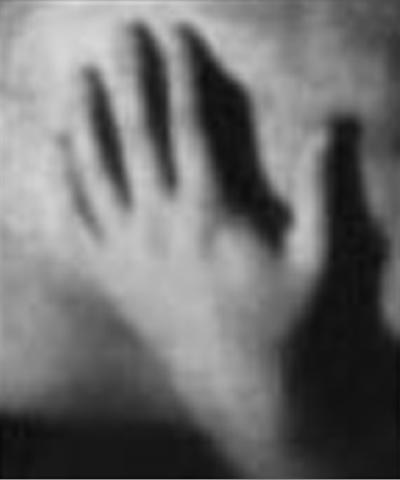

Solens stråler, av Britt Kristoffersen 
solens stråler - forsiktig treffer de deg i nakken - din sexy nakke
har ingen kontroll over mine følelser det sensuelle erotiske ta meg
jeg bønnfaller deg underkaster meg du vet dette er ulikt meg
selvstendighet frigjøring alt det jeg har krevd gir jeg opp for deg
hvordan vil du ha meg det er opp til deg å bestemme hva jeg skal være
jeg er din - du kan aldri bli kvitt meg kan aldri løsrive deg - jeg
har tatt deg
solen blekner gir ingen varme sammenlignet med din varme du brenner
jeg vet det
du later som ingenting men jeg vet hva du egentlig tenker du kan
protestere
men det nytter ikke jeg kjenner deg jeg er kommet under huden din
det slørete blikket mitt er ment å lokke forføre fange - bit på agnet
nå jeg kan ikke
vente i all evighet jeg vil at du skal tro du får en eneste sjanse men
igjen og igjen
jeg er ute etter å få deg derfor må du jakte på meg du skal ta meg
ser du min underkastelse ser du hva jeg gjør for deg når skal du sette
pris på det
jeg er utålmodig og krevende men du skal aldri lide under det jeg
skjuler det
rastløsheten er deg til del aldri skal jeg kreve aldri skal jeg stille
ultimatum
det er alltid din oppgave alltid deg forunt dine premisser skal jeg
godta
allikevel drømmer jeg om nettene når jeg er ensom når jeg savner
lengter ønsker
når du ikke kan se meg avsløre meg som løgner - da raser jeg for mine
krav
som undertrykkes av meg mer enn deg du kan aldri slippe fordi jeg
ikke lar deg gå
jeg unngår bevisst å be deg om det jeg vil ha du skal aldri føle deg
presset
tærer på vakre ville minner solen blekner sammenlignet med deg jeg er
solens datter
du gjør meg til min skygge jeg godtar det godtar alt fra deg i den
tåpelige troen på at
jeg slik kan beholde deg du er min skjebne og jeg aksepterer jeg må ha
deg
jeg klorer meg fast du har ikke håp du må ta meg med - du må innse at
i mitt hjerte
ligger svaret du leter etter du skal ha meg det finnes ingen annen du
trenger meg
jeg bønnfaller deg om å forstå om å gripe fatt i meg - vekk meg med
din sensualitet
det finnes ingen fremtid uten den vi har sammen jeg er din slavinne
ditt søte smil
jeg vet du liker klørne mine men jeg trekker dem tilbake for deg -
jakt på meg nå
- Britt Kristoffersen
britt_kristoffersen@hotmail.com